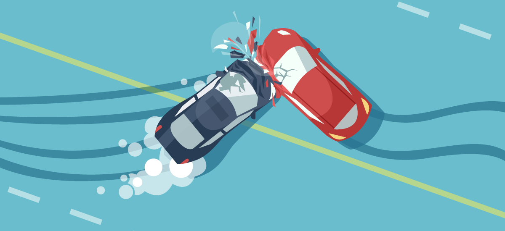

18CSE301J-Information Visualization
Udarapu Chandu
RA2011029010058
Year wise Road Accidents, Persons Killed and Injured from 1970 to 2019
VISUALIZATION
Tableau

ABOUT DATASET
The data refers to Total Number of Road Accidents, Persons Killed and Injured. It also provides some other information like Number of Accidents per Lakh Population, Number of Accidents per Ten Thousand Vehicles, Number of Accidents per Ten Thousand Kms of Roads, Number of Persons Killed Per Lakh Population, Number of Persons Killed Per Ten Thousand Vehicles, Number of Persons Killed per Ten Thousand Kms of Roads, Number of Persons Injured per Lakh Population, Number of Persons Injured Per Ten Thousand Vehicles and Number of Persons Injured Per Ten Thousand Kms of Roads. Data of road accidents in India are collected by Transport Research Wing (TRW) of Ministry of Road Transport & Highways from the Police Headquarters of the various states, UTs and Million Plus cities in India through specially designated nodal officers(DGP/ADGP(Crime)/ADGP(Traffic)/ Director (State Crime Record Bureau) in a 19-item format devised under Asia Pacific Road Accidents Data(APRAD)/ Indian Road Accident Data(IRAD) project of the United Nations Economic and Social Commission for the Asia & the Pacific(UNESCAP).
DATASET click here to access .
STORY TELLING
Road accidents have become very common nowadays. As more and people are buying automobiles, the incidences of road accidents are just increasing day by day. Furthermore, people have also become more careless now. Not many people follow the traffic rules. Especially in big cities, there are various modes of transports. Moreover, the roads are becoming narrower and the cities have become more populated.